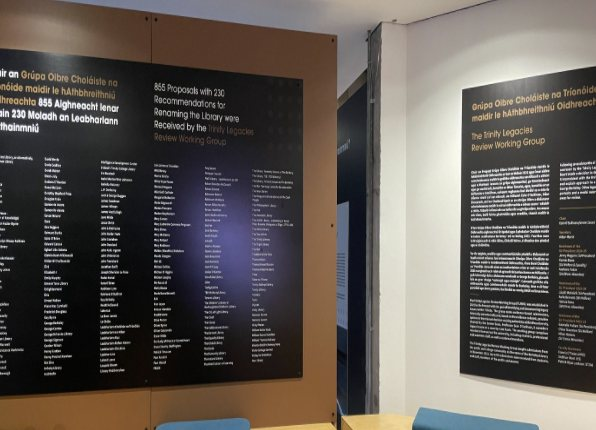
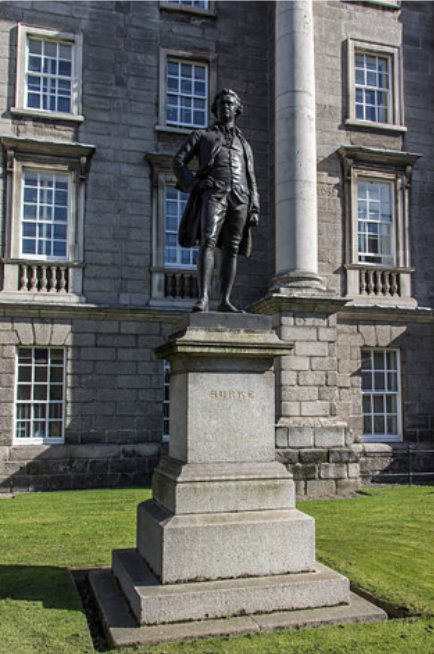
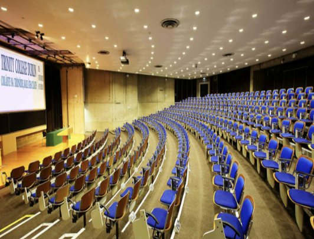

Introduction
The introduction will be added here.
Organization Design
As Trinity College Dublin is a university focusing on human cognition and student development, its framework should revolve around their community. Thus, we believe Trinity follows the Human Resource model. This lens recognizes that humans have potential managers should work to develop, an idea which McGregor’s theory Y captures (McGregor, 1960). While Scientific Management is useful for large corporations prioritizing efficiency and output, Trinity’s primary goal should be the holistic development of its alumni rather than efficiency alone.
Exemplifying this, Trinity excels at ensuring each student's voice is recognized. Each student body has a representative who advocates the needs of their specific group. Simultaneously, the Student Union advocates student needs at the institutional level. If something is not met, Trinity aims to provide channels through which students can communicate their concerns (Trinity College Dublin, n.d.). Following the same principle within the Human Resource model, these methods foster an environment where individuals feel included within their organization.
Ensuring students feel integrated within their broader society is equally as important. The Human Resource Model argues that organizations cannot exist independently from their society, stating that organizations are influenced by the needs and expectations of those around them (Bratton, 2020, p. 31). Mirroring this value, Trinity frequently supports Irish demonstrations and encourages students to integrate themselves within their broader society. For instance, due to staff industrial action, classes on the 14th of October were suspended (Asaf, 2026). Through respecting these protests, Trinity enabled their community to engage with their broader civic responsibilities. Social identity theory suggests that part of our self-concept is defined by the social groups we belong to (Tajfel and Turner, 1979, cited in Bratton, 2020, p. 159). Trinity strengthens a shared identity that extends beyond the campus. When this is acknowledged, students are more likely to feel a sense of belonging, which in turn contributes to a more cohesive society.
Finally, Trinity’s ability to accommodate all students reflects the Human Resource's emphasis on individual value. Its LENS system provides individualized support to those in need, ensuring every student has equal opportunity and empowers everyone to reach their academic potential (Bratton, 2020, p. 193).
Our group believes the Human Resource Model is sustainable for the future but only given its correct implementation. Following a system that supports inclusivity and active communication is foundational to an academic cohort, but, at times Trinity falls short in its effective execution. As McGregor recognized, there can be a significant gap between manorial rhetoric and practice within large organisations (Bratton, 2020, p. 179). While these channels are well-intentioned, processing delays often occur which can undermine student issues and leave individuals feeling marinized. Moreover, the top-down formatting alienates the student body from comprehensive decision making. While student organizations are included, its formatting makes the issues difficult to recognize from the top. This can become dangerous because if students are perceived as an out-group, Trinity’s sense of community may weaken (Bratton, 2020, p. 160). While the model succeeds in theory, its implementation requires minor refinement.
Cultural Evidence & Artefacts
The library exhibition documents the change of the library’s name: Berkley to its new name: Eavan Boland. Documents the full process of the reasons for the library's change of name as well as the points made by students as to why it was so important to progress away from the name Berkley to help the cultural values of the college develop .

The visible evidence of culture and change is clear as the biggest change was the name change itself along with the information provided in the exhibition about the change. The history and general reasoning behind it, although they did still keep the stained-glass mural in honor of Berkley to still honour his work rather than him as a person. The exhibition acknowledges a successful woman and her work, this expresses further empowerment of women.
In terms of the invisible evidence, the library’s name has been taken from a successful man and given to a successful woman showing the change in how women have become valued in society which develops cultural change. Not only this the name change recognises that George Berkley was not a person who people should be looking up to due to his slave ownership and promotion, the change shows the moral development of culture and society today and how people no longer want important marks to be named after those with outdated beliefs
The exhibition carries the documentation of the petitions signed to rename the library, these were initiated and put forward by students at the college in 2022. The students formed an alliance and fought for what they believed in which wouldn’t have been a common thing in previous years which also implies a big culture change in trinity.

“The name has been judged inconsistent with the University’s core values. Trinity is to dename the Berkeley Library while adopting a retain-and-explain approach to a stained-glass window commemorating George Berkeley.” – his exhibition remains [mural] as well as the information about his significance. They preserved the history of Berkley which shows less value changes within trinity.
Schein’s views on culture can explain how each one of these features of the library’s changes are relating to national culture and how they have developed in time with the change in name of the library. Norms and values have immensely developed in terms of how women are represented in society as well as morals relating to who the college should be commemorating regardless of their achievements. As well as this it shows the progression in inclusion of student voices as in previous years students would have never been granted such power in renaming a library, And finally how they have allowed the artifacts of Berkley to remain.
In relation to page 346 of the reading we can see that the students of Trinity were integrated into the same community in terms of beliefs, this heavily affected the culture change as they were able to come together to sign the petition to change the name of the library. This cultural change established that the majority of students now disagreed with the actions and beliefs of Berkley and don’t think that he is a historical figure that should be commended and represented. It also relates to the third point of masculinity vs femininity, a significant argument for the library to be called the Eavan Boland library instead of Berkley was due to rise in femininity and a culture change in which women are valued in society.
Realigning Culture
Trinity’s renaming of the Berkeley library after Eavan Boland represents an important step towards acknowledging its past and upholding its values of ‘human dignity, freedom, inclusivity and equality’. However to have a lasting impact, these values must be reflected more widely across campus. The distinction between espoused and enacted values (Bratton, 2015) suggests that Trinity’s commitment to inclusivity must be reflected in its commemorative practices, not merely its public statements. Two spaces that deserve further consideration are the Edmund Burke Theatre/Statue and the statue of George Salmon.


The Edmund Burke Theatre and statue raise questions about how Trinty commemorates controversial figures. Research by Hussain, O’Neill and Walsh (2023) highlights Burke's involvement in protecting West Indian commercial interests linked to the Atlantic slave economy. In 1775 Burke opposed duties on enslaved people imported into Jamaica, demonstrating how his political actions protected the financial interests of plantation economies reliant on slave labour. Although not directly involved in slave ownership, Burke contributed to economic structures sustaining slavery. However, his legacy is not entirely straightforward. In his Sketch of the Negro Code, Burke also proposed reforms aimed at improving conditions for enslaved people. This makes his relationship with slavery more contradictory than that of George Berkeley, whose direct ownership of slaves contributed to the decision to rename the library.
Rather than immediately renaming the Edmund Burke Theatre, Trinity could introduce a permanent historical display outlining Burke’s political achievement alongside his connections to the slave economy. A QR code linking to further historical research could be included, a physical display would ensure that students encounter this history as part of their everyday university experience, rather than having to seek it out. This approach would preserve recognition of Burke’s intellectual contributions while encouraging critical understanding of his legacy. However, contextualisation alone may be insufficient if Trinity continues to honour historical figures without reconsidering the broader principles that guide its commemorative decision,

The statue of George Salmon raises a similar issue in relation to gender equality. Salmon strongly opposed women's admission to Trinity and famously declared that women would enter the university “over his dead body”. Interestingly, the first woman to sit an examination at Trinity did so on the day of Salmon's funeral in 1904. Despite this history, his statue remains prominent in Front Square. Trinity has briefly acknowledged his opposition through an explanatory QR code. Today, female graduates often pose beside Salmon's statue with their degrees, effectively reclaiming it as a symbol of progress. Rather than removing the statue, Trinity could introduce artwork or a memorial celebrating the pioneering women who overcame these barriers. This would acknowledge the university's history while giving greater recognition to those who challenged its exclusionary practices. Importantly this would challenge the traditional dominance of male figures in Trinity’s commemorative landscape.

Schein’s model of organisational culture identifies buildings and statues as visible artefacts reflecting deeper institutional values (Bratton 2015). Applying Schein's model of organisational culture, the Burke Theatre and Salmons statue represent visible artefacts that may reflect historical assumptions about whose achievements deserve institutional recognition. Gramsci's concept of hegemony, whereby the values and beliefs of dominant groups become embedded within institutions and gradually accepted as normal (Bratton, 2020), is reflected in the commemoration of figures such as Burke and Salmon reflecting whose achievements Trinity has historically prioritised. Bratton's (2015) discussion of double-loop learning suggests that meaningful organisational change requires questioning the assumptions underlying existing practices rather than simply addressing individual issues. Applied to Trinity, this means reconsidering not only how Burke and Salmon are commemorated, but also why particular historical figures were honoured in the first place. By questioning these established practices, Trinity could move beyond symbolic changes towards a more meaningful transformation of its organisational culture.
Implementing these changes is likely to generate some resistance. Alumni, academics and heritage advocates may view changes to historical commemorations as a threat to tradition, others may argue that providing additional context is insufficient when controversial figures continue to receive prominent recognition. Bratton's (2015) discussion of group dynamics explains how shared values and group loyalties can influence responses to organisational change. His distinction between functional and dysfunctional conflict is also relevant, as disagreement can encourage constructive debate when managed effectively, but may become divisive if competing perspectives are ignored. Rather than treating opposition as an obstacle Trinity should consult students, academics and alumni to encourage constructive debate allowing competing perspectives to inform decisions while ensuring that its commitment to equality remains central when considering changes to these spaces. Meaningful consultation would help balance historical preservation with inclusivity, while reducing the risk that well-intentioned reforms create further division.
Ultimately, contextualising Burke's legacy and recognising women's achievements alongside Salmon's statue would demonstrate that Trinity's commitment to equality extends beyond renaming a single building.
Cultural Intervention & Leadership
The renaming of Trinity College’s Berkeley library to the Eavan Boland library highlights the complexities of managing cultural change within an organisation. While the decision reflects TCD’s evolving values, the controversy surrounding it highlights the need for a proactive and inclusive approach. The Provost should adopt a clearly structured five-stage intervention process involving review, consultation, communication, implementation, and evaluation, supported by effective and inclusive management and leadership practices.
Stage 1 – review and identify need for change
Trinity should conduct regular reviews involving a representative group of stakeholders to assess whether building names, memorials and other institutional structures reflect the university’s current values. This requires a proactive and participative leadership approach from the Provost, encouraging open discussion and consideration of different perspectives. Addressing cultural concerns early, could reduce resistance and student protests. This step reflects Lewin’s unfreezing stage, which involves questioning established practices and preparing individuals for organisational change. (Bratton, 2020).
Stage 2 – consult and involve stakeholders
The Provost should adopt a participative leadership approach that actively involves students, academic and administrative staff through a permanent cultural review committee. This committee should represent the university’s diverse community to gain a multitude of perspectives that are considered in the decision-making process. Bratton (2020), highlights the importance of teamwork and communication in organisational decision-making. Inclusive decision-making assures stakeholders that their concerns are being considered fairly. If an approach like this had been applied to the Berkeley Library controversy concerns could have been addressed sooner, potentially reducing disagreement. Multiple stakeholders being involved in decision-making increases risk of conflicting opinions that delay decision-making, therefore the Provost should balance inclusivity with efficiency.
Stage 3 – communicate a clear plan
Effective communication is an essential factor in implementing cultural change, as it helps build support and understanding. The Provost should clearly explain why a cultural intervention is necessary, how decisions are being made and how the proposed change will align with Trinity’s evolving values. Kotter’s change management model emphasises the importance of communicating a clear vision to support successful organisational change (Bratton, 2020). Management should implement email updates and discussion groups to help minimise concerns and uncertainty and reduce resistance.
Stage 4 – implement the change
Once a collective decision has been made by the cultural review committee, Trinity’s management should establish clear responsibilities, timelines, and resources to ensure effective implementation. This process aligns with Lewin’s movement stage, which focuses on introducing new practices and encouraging changes in organisational attitudes and behaviours (Bratton, 2020).
Effective leadership is a vital part of implementation. Bandura’s Bobo doll experiment demonstrates how individuals learn behaviours through observing others, highlighting the importance of positive role models (Bandura, 1977). The Provost should model transparency and inclusivity to encourage similar behaviour among stakeholders and reinforce a positive organisation culture.
Stage 5 – evaluate change implemented
Following implementation, Trinity’s management should evaluate outcomes through stakeholder surveys, feedback sessions, and committee reviews. This allows management to assess whether the intervention has achieved its objectives and identifies areas of improvement for future interventions. This links to Lewin’s refreezing stage, which emphasises the reinforcement of new practices to ensure change is immersed in organisational culture (Bratton, 2020). Management should remain flexible as culture and values of organisations continue to evolve.
This proposed five stage intervention process combines participative leadership with structured management to support effective cultural change in Trinity. Prioritising stakeholder involvement and effective communication allows the Provost to reduce resistance to change and ensure future interventions help to reflect the universities evolving values.
Conclusion
The conclusion will be added here.
References & Citations
- Asaf, S. (2026) ‘Pay strikes force Irish universities to cancel classes’, Times Higher Education, 14 October. Available at: https://www.timeshighereducation.com/news/pay-strikes-force-irish-universities-cancel-classes (Accessed: 19 November 2026).
- Bandura, A. (1977) Social Learning Theory. Englewood Cliffs, NJ: Prentice Hall.
- Bratton, J. (2015) Introduction to Work and Organizational Behaviour. 3rd edn. London: Palgrave.
- Bratton, J. (2020) Work and Organizational Behaviour. 4th edn. London: Bloomsbury. Available at: ProQuest Ebook Central (Accessed: 8 November 2026).
- Burke, E. and Burke, W. (1757) An Account of the European Settlements in America. London: R. and J. Dodsley.
- Hussain, M., O’Neill, C. and Walsh, P. (2023) Draft Trinity Colonial Legacies Working Paper on TCD and Slavery. Dublin: Trinity College Dublin. Available at: https://hdl.handle.net/2262/104217.
- Marshall, P.J. (2019) Edmund Burke and the British Empire in the West Indies: Wealth, Power, and Slavery. Oxford: Oxford University Press.
- McGregor, D. (1960) ‘Theory X and Theory Y’, Organization Theory.
- Schein, E.H. (2017) Organizational Culture and Leadership. 5th edn. Hoboken, NJ: Wiley.
- The Brain: A Secret History – Emotions; Bandura Bobo Doll Experiment (n.d.) [YouTube video]. Available at: https://www.youtube.com/watch?v=zerCK0lRjp8 (Accessed: 12 November 2026).
- Trinity College Dublin (2023) Trinity College Dublin to dename the Berkeley Library, 26 April. Available at: https://www.tcd.ie/news_events/articles/2023/trinity-college-dublin-to-dename-the-berkeley-library (Accessed: 19 November 2026).
- Trinity College Dublin (n.d.) Support Services for Students. Dignity, Respect, and Consent Service. Available at: https://www.tcd.ie/hr/dignity-and-respect/students/support-services/ (Accessed: 19 November 2026).
- Trinity Legacies Review Working Group (n.d.) Berkeley and Trinity. Trinity College Dublin. Available at: https://www.tcd.ie/legacies/past-legacy-issues/berkeley-and-trinity (Accessed: 19 November 2026).
Team Contract
What do we want to accomplish as a team?
- What mark/grade?
Our group would like to achieve a First Class Honours in this module.
- What learning outcomes?
Our group aims to work well together by communicating openly, sharing responsibilities fairly and supporting one another throughout the project. We want to develop a better understanding of how people behave in organisations, including how personality, motivation, communication and leadership influence individuals and teams. We also hope to explore how organisations operate, make decisions and respond to challenges and change. By applying theories and research from our Organisational Behaviour module, we aim to strengthen our teamwork, develop our problem-solving skills and gain a better understanding of how to work effectively with others.
- How much time are we willing/expecting to commit per week? Together? Individually?
We aim to spend an hour each doing individual research and 30 minutes each week after the tutorial working together.
What are our ground-rules for meetings and communications?
- Main mode of communication?
We have made a WhatsApp group chat to communicate with each other
- Meeting format
We have elected one member to arrange the meetings and delegate roles to ensure efficiency and maximise productivity
- Behaviour
Everyone must attend the group meeting on Friday, unless they have already communicated a valid reason for their absence beforehand
How will decisions be made?
- By consensus? Majority vote?
Majority vote
We aim to work as a team and therefore usea group consensu and majority vote to make any decesions
- How will we ensure timeliness of decisions?
We will establish weekly timelines at our meetings i.e completing a particular task and reflect on these tasks at the following meeting
How will we operate as a team?
- Who will upload the assignment?
Isabel Fitzgerald
- Who will coordinate the team?
Zoe Cullen
- Who will document the decisions made by the team?
Paige
- Who will follow up on action items?
Lana Burke and Eva Disley
How will we deal with exceptional events?
- What happens in case of illness of a member / extraordinary work commitments?
We will try to accommodate all members and ensure wellbeing is prioritised.
In rare cases where a member cant complete the work we can re delegate tasks
How will we deal with violations of the team contract?
Discuss as a group and try find a solution to the problem together, if there’s extreme violation of the team contract we will contact the TA if necessary
Other conditions or comments
We have decided as a team to each take 1 of the tasks, as well as the introduction, conclusion and peer review
It is important that all members of the team understand and agree to the above rules and conditions.
- Paige Timmenytimmenyp@tcd.ie
- Eva Disleydisleye@tcd.ie
- Isabel Fitzgeraldfitzgeis@tcd.ie
- Lana BurkeLburke4@tcd.ie
- Zoe Cullencullenz@tcd.ie